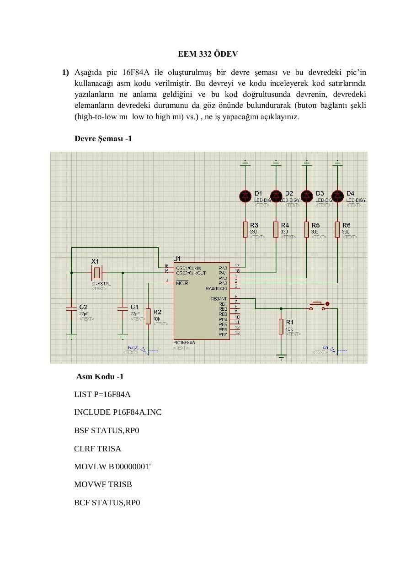
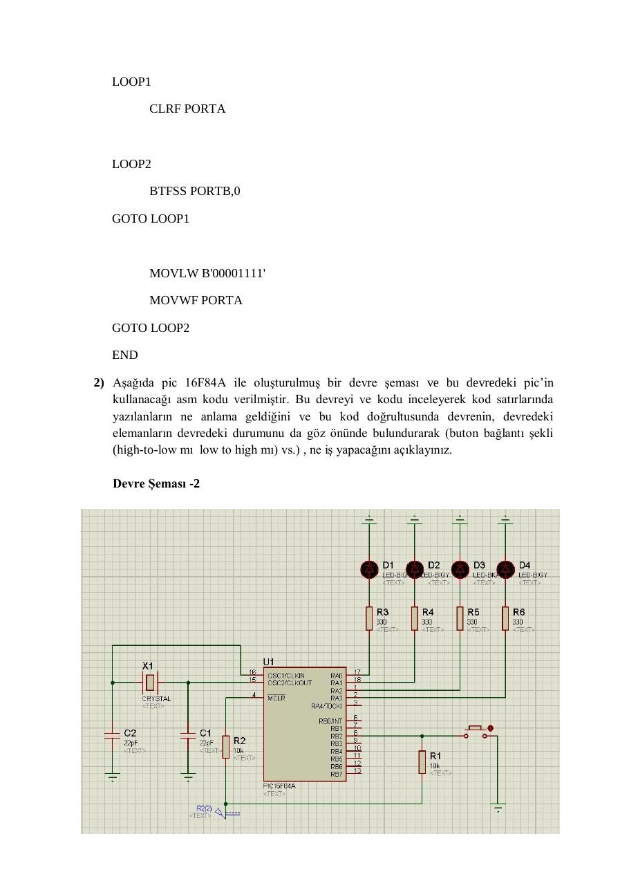
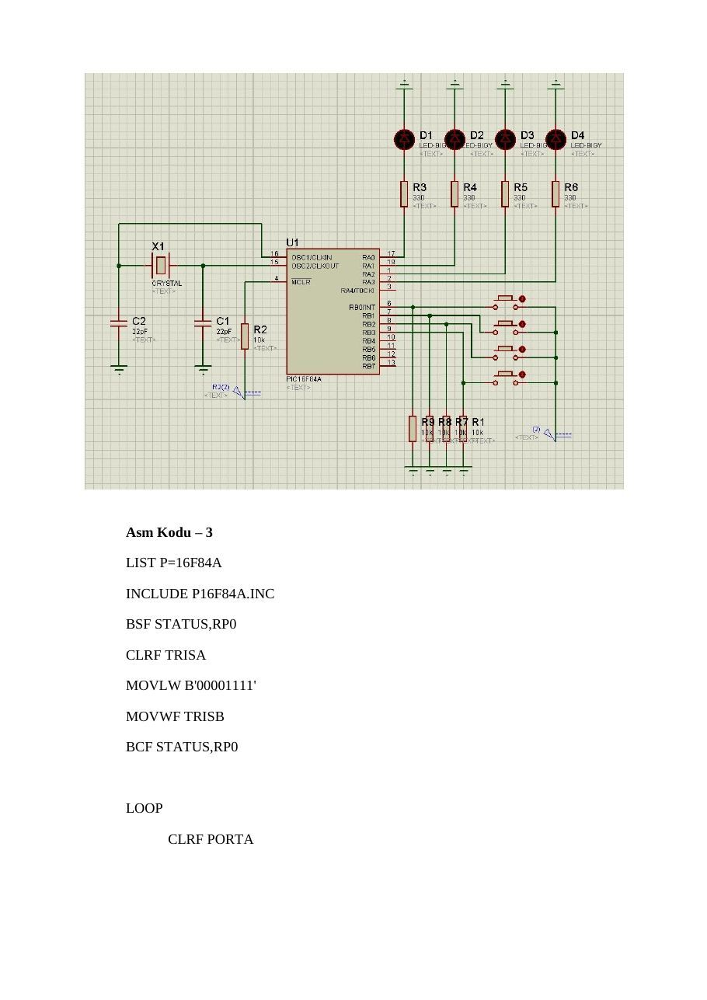

· EEM332
EEM332 Mikroişlemciler: PIC16F84A Ödevi: Buton ve LED Denetimi
EEM332 – Mikroişlemciler · 01.05.2013 · 18.10.2026
Bu yazı, Başkent Üniversitesi EEM332 Mikroişlemciler ders arşivindeki ilgili notları ve uygulamaları bir araya getiriyor (2013–2015). 2013 PIC ödevi: TRIS yönlendirmesi, BTFSC/BTFSS ve buton durumuna göre LED çıkışları. Bir arkadaşın hazırladığı çalışmalar ve ders belgeleri birlikte aktarılmış; öğrenci adları, numaraları ve grup bilgileri çıkarılmıştır. Belgelerin PDF arşiv kopyaları ve varsa kaynak kodları yazının sonunda ZIP olarak indirilebilir.
EEM332_odev
EEM 332 ÖDEV
1) Aşağıda pic 16F84A ile oluşturulmuş bir devre şeması ve bu devredeki pic’in
kullanacağı asm kodu verilmiştir. Bu devreyi ve kodu inceleyerek kod satırlarında yazılanların ne anlama geldiğini ve bu kod doğrultusunda devrenin, devredeki elemanların devredeki durumunu da göz önünde bulundurarak (buton bağlantı şekli (high-to-low mı low to high mı) vs.) , ne iş yapacağını açıklayınız.
Devre Şeması -1
Asm Kodu -1
LIST P=16F84AINCLUDE P16F84A.INCBSF STATUS,RP0CLRF TRISAMOVLW B'00000001'MOVWF TRISBBCF STATUS,RP0LOOP1CLRF PORTALOOP2BTFSS PORTB,0GOTO LOOP1MOVLW B'00001111'MOVWF PORTAGOTO LOOP2END2) Aşağıda pic 16F84A ile oluşturulmuş bir devre şeması ve bu devredeki pic’in
kullanacağı asm kodu verilmiştir. Bu devreyi ve kodu inceleyerek kod satırlarında yazılanların ne anlama geldiğini ve bu kod doğrultusunda devrenin, devredeki elemanların devredeki durumunu da göz önünde bulundurarak (buton bağlantı şekli (high-to-low mı low to high mı) vs.) , ne iş yapacağını açıklayınız.
Devre Şeması -2
Asm Kodu – 2
LIST P=16F84AINCLUDE P16F84A.INCBSF STATUS,RP0CLRF TRISAMOVLW B'00000100'MOVWF TRISBBCF STATUS,RP0LOOP1MOVLW B'00000101'MOVWF PORTALOOP2BTFSC PORTB,2GOTO LOOP1MOVLW B'00001010'MOVWF PORTAGOTO LOOP2END3) Aşağıda pic 16F84A ile oluşturulmuş bir devre şeması ve bu devredeki pic’in
kullanacağı asm kodu verilmiştir. Bu devreyi ve kodu inceleyerek kod satırlarında yazılanların ne anlama geldiğini ve bu kod doğrultusunda devrenin, devredeki elemanların devredeki durumunu da göz önünde bulundurarak (buton bağlantı şekli (high-to-low mı low to high mı) vs.) , ne iş yapacağını açıklayınız.
Devre Şeması – 3 ↓ (sonraki sayfada) ↓
Asm Kodu – 3
LIST P=16F84AINCLUDE P16F84A.INCBSF STATUS,RP0CLRF TRISAMOVLW B'00001111'MOVWF TRISBBCF STATUS,RP0LOOPCLRF PORTATEST1
BTFSC PORTB,0GOTO LOOP1TEST2
BTFSC PORTB,1GOTO LOOP2TEST3
BTFSC PORTB,2GOTO LOOP3TEST4
BTFSC PORTB,3GOTO LOOP4GOTO LOOPLOOP1MOVLW B'00000001'MOVWF PORTAGOTO TEST1LOOP2MOVLW B'00000010'MOVWF PORTAGOTO TEST2LOOP3MOVLW B'00000100'MOVWF PORTAGOTO TEST3LOOP4MOVLW B'00001000'MOVWF PORTAGOTO TEST4END


EEM332_odev_aciklama
EEM332 DERSİ ÖDEVİ İLE İLGİLİ AÇIKLAMA
EEM332 dersi ödevleri ilgili bağlantıya yüklenmiştir. Okul numarasının son hanesi
0, 1, 2 veya 3 olanlar 1 numaralı 4, 5 veya 6 olanlar 2 numaralı 7, 8 veya 9 olanlar 3 numaralı
çalışmadan sorumludur. İlgili çalışmada verilen şema ve kaynak kod ile neyin gerçekleştirildiği kısaca açıklanacaktır. Çalışmalar bireysel olarak yapılacaktır. Aynı olan çalışmaların (çalışmayı verenler ve alanlar için) değerlendirme notu 0 olarak verilecektir. Ödevler 8 Mayıs 2013 Çarşamba günü ders saatinde çıktı olarak teslim edilecektir.
ödevlab
Program açıldığında, portB’nin ikinci bitine(RB2) bağlı buton “high” iken(basılı değil);
-PortA’nın sıfırıncı bitindeki(RA0-D1 lambası) ve portA’nın ikinci bitindeki(RA2-D3 lambası) led lambalar yandı.
Program açıldığında, portB’nin ikinci bitine(RB2) bağlı buton “low” iken(basılı);
-PortA’nın birinci bitindeki(RA1-D2 lambası) ve portA’nın üçüncü bitindeki(RA3-D4 lambası) led lambalar yandı.
Programın amacı, buton high değerinde iken tek değerdeki led lambalarını (Dl-D3), buton low değerinde iken çift değerdeki led lambalarını(D2-D4) yakar.
HİGH iken;
LOW iken;
ODEV
LIST P=16F84A
INCLUDE "P16F84A.INC"
ORG 0X00 ;Programı '0x00' dan başlatır.
BSF STATUS,RP0 ;STATUS'ün beşinci bitini 1 yaparak TRISA VE TRISB'nin olduğu BANK1'e geçtik.
CLRF TRISA ;TRISA'nın tüm bitlerini output yaptık.
MOVLW B'00000100' ;Working Registera değer aldık.
MOVWF TRISB ;Working R. daki değer ile TRISB'nin ikinci bitini(RB2) input yaptık.
BCF STATUS,RP0 ;STATUS'ün beşinci bitini 0 yaparak BANK0'a geçtik.
LOOP1 ;LOOP1 döngüsü butona basılı değil iken (high) çalışır.
MOVLW B'00000101' ;Working R. 'a B'00000101'(H'05') değerini aldık.
MOVWF PORTA ;Working R.'daki değeri PORTA'ya attık.RA0 ve RA2 bitlerini 1 değeri yaptık ve lambalar yandı.
LOOP2 ;LOOP2 döngüsü butona basılı iken (low) çalışır.
BTFSC PORTB,2 ;PORTB adresindeki sayının ikinci bitini kontrol eder. Eğer sıfır(low) ise, kendisinden sonra gelen komutun üzerinden atlar. Değilse (high) GOTO LOOP1 komutundan devam eder.
GOTO LOOP1 ;LOOP1 döngüsüne gider.
MOVLW B'00001010' ;Working R. 'a B'00001010'(H'10') değerini aldık.
MOVWF PORTA ;Working R.'daki değeri PORTA'ya attık.RA1 ve RA3 bitlerini 1 değeri yaptık ve lambalar yandı.
GOTO LOOP2 ;LOOP2 döngüsünden devam eder.PORTB 'nin ikinci bitindeki (RB2) butonunu kontrol ederek devam eder.
END ;Sonlandırma komutu.ÖDEV
LIST P=16F84A
INCLUDE "P16F84A.INC"
ORG 0X00
BSF STATUS,RP0
CLRF TRISA
MOVLW B'00000100'
MOVWF TRISB
BCF STATUS,RP0
LOOP1
MOVLW B'00000101'
MOVWF PORTA
LOOP2
BTFSC PORTB,2
GOTO LOOP1
MOVLW B'00001010'
MOVWF PORTA
GOTO LOOP2
END1
LIST p=16F84A
INCLUDE "P16F84A.INC"
__CONFIG _CP_OFF & _WDT_OFF & _PWRTE_ON & _XT_OSC
j EQU 0x0c
k EQU 0x0d
ORG 0x00
BSF STATUS,5
MOVLW 0x00
MOVWF TRISB
BCF STATUS,5
LEDonoff:
movlw b'00000001'
movwf PORTB
call delay
movlw b'00000000'
movwf PORTB
call delay
goto LEDonoff
delay:
movlw d'200'
movwf j
jloop:
movwf k
kloop:
decfsz k,f
goto kloop
decfsz j,f
goto jloop
return
End